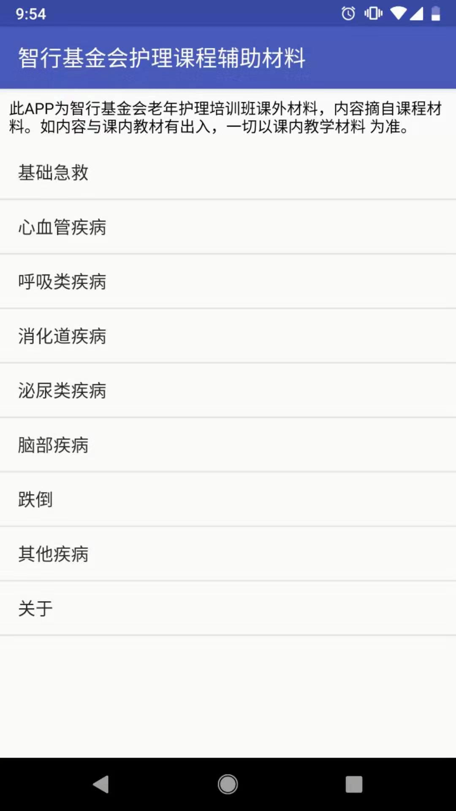
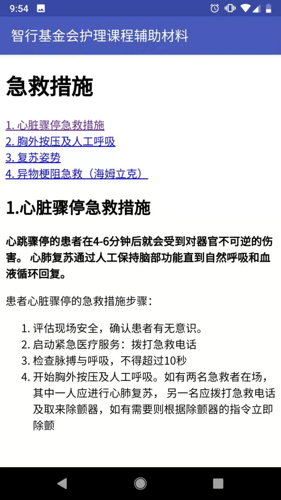
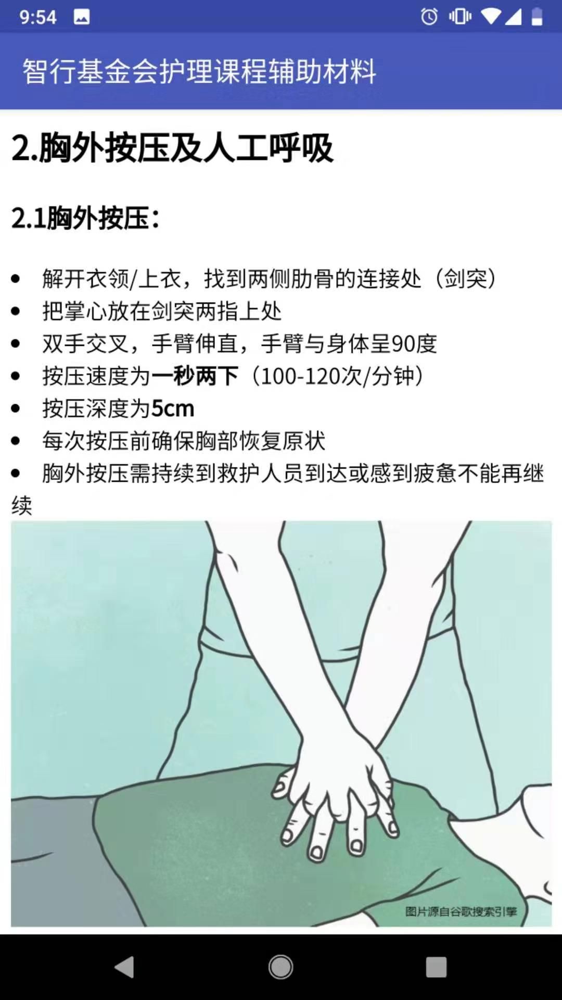

Nursing Course Support Android Application (Personal Project)
June - July 2019
An Android mobile application developed to supplement Chi Heng Foundation's first Nursing Care Assistant Course offering in Zheng Zhou, China. This application
allows students to review selected topics discussed in class, and can also serve as a quick-reference guide to help students recognize clients' health conditions
during clinical practice. The application was distributed to students via APK download in July.



Project highlights:
- Utilized Listview in main activity to clearly display topic choices, and passed bundle to allow users to select specific topics to view from main activity
- Implemented topic contents using Webview layout (HTML) for simple, clear, and effective delivery of contents
- Skills: Java, Android Studio, HTML
Pet Finer Web Application (Hackathon Project)
March 2019
A WebApp developed with React.js that aimed to help pet owners to find their lost animals. The WebApp utilized City of Vancouver's open data, which was transformed
into flat file in JSON format and used for search and display function of the application.
Project highlights:
- Learned basic Linux commands and programed with HTML, CSS, Node.js, and React.js in one day and worked in a team of four to design and implement the application
- Utilized City of Vancouver’s lost pet database and developed a web application that allowed users to search for their lost pets by date
- Responsible for Designing and implementing front-end with one other group member, such as banner, logo, buttons, and search-bar
- Skills: JavaScript, Node.js, Reat.js, HTML5, CSS
To-do Task Manager (Class Project)
Jan - April 2019
A 4-phase Java class project completed for CPSC210 (Software construction course). To-do tasks and projects (a group of tasks) can be created, deleted, and modified and are stored in JSON format.
Each task is parsed into JSON object and has features including title, description, due-date, priority, and tags. GUIs are implemented with JavaFX.
Composite design pattern is used so that features such as progress and time to completion can be modified and calculated for both projects and tasks. For each phase, JUnit tests
are used to comprehensively test the functionality of the project.
Project highlights:
- Utilized IO to store, modify, and extract tasks with JSON parser
- Create basic Java classes from scratch to implement UML diagrams and specified functionalities, while making effective use of design patternse
- Designed and implemented JUnit tests to comprehensively test program functionalities
- Skills: Java, IntelliJ, JSON, JUnit, design patterns, OOP
About Me
Hello! My name is Helen Wang. I am a third year second degree Bachelor of Computer Science student at UBC.
I am also working as a casual Registered Nurse at the Intensitve Care Unit at the Burnaby Hospital.
I am detail-oriented, responsible, and passionate about learning new tools and technologies. My techincal skills include:
Programming languages: Java, C++/C, HTML, CSS
Tools/Environment: IntelliJ, Visual Code Studio, Github, Ubuntu, Android Studio
Connect with me: